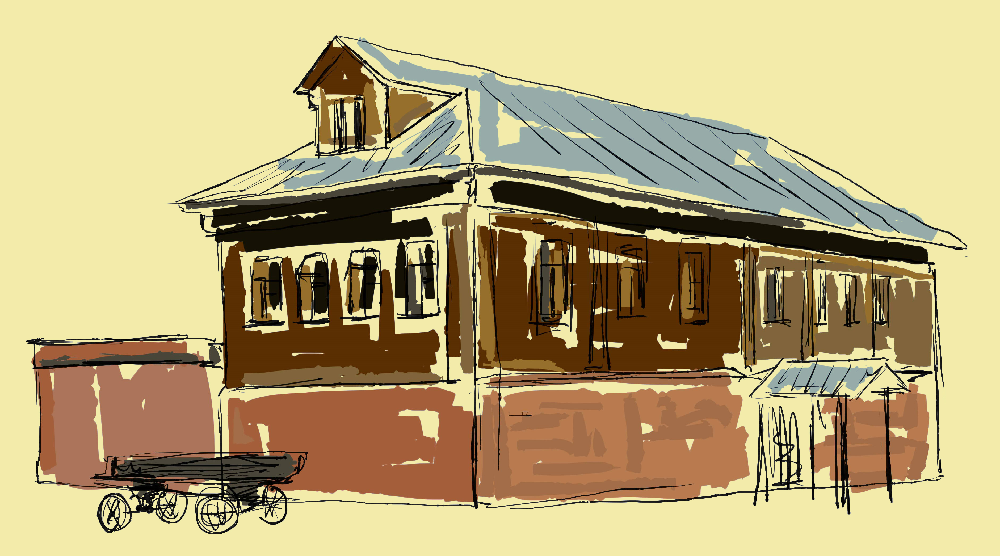
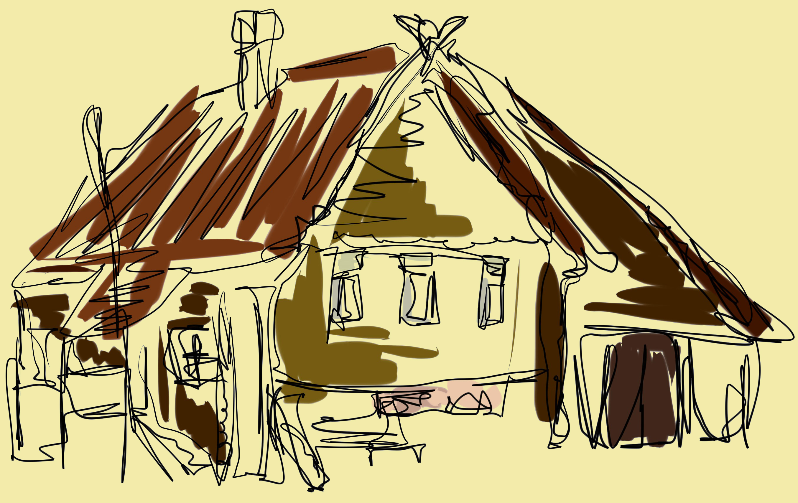

 УСАДЬБА КОЛОМЕНСКОГО КРЕСТЬЯНИНА ЭТО ОДНА ИЗ СТАРИННЫХ УСАДЕБ РОССИИ. В ЕЕ КОМПЛЕКС ВХОДЯТ ОТДЕЛЬНЫЕ ХОЗЯЙСТВЕННЫЕ ПОСТРОЙКИ КРЕСТЬЯНСКОГО ДВОРА, ЖИЛОЙ ДОМ, ИЗБУШКА ДЛЯ ХРАНЕНИЯ ЗЕРНА, ОГОРОД И КОНЮШНЯ, В КОТОРОЙ СОДЕРЖАЛИ ЛОШАДЕЙ И КОРОВ. ЖИЛОЙ ДОМ БЫЛ ПОЛНОСТЬЮ ОТСТРОЕН ПО АРХИВНЫМ ДОКУМЕНТАМ И ФОТО КРЕСТЬЯНСКОЙ ИЗБЫ КОНЦА XIX - НАЧАЛА ХХ ВЕКОВ. ОБЩАЯ ПЛОЩАДЬ УСАДЬБЫ СОСТАВЛЯЕТ 0,18 ГЕКТАР.
НА ПРИМЕРЕ ОГОРОДА И САДА, РАЗБИТЫХ НА ТЕРРИТОРИИ ДВОРА, ПРЕДСТАВЛЕНЫ ОСНОВНЫЕ ЗЕМЛЕДЕЛЬЧЕСКИЕ ЗАНЯТИЯ КОЛОМЕНСКИХ КРЕСТЬЯН.ЖИЛОЙ ДОМ ВОССОЗДАН ПО СОХРАНИВШИМСЯ АРХИВНЫМ ДОКУМЕНТАМ И ФОТОГРАФИЯМ КРЕСТЬЯНСКОЙ ИЗБЫ КОНЦА ХIХ – НАЧАЛА ХХ В.В. ИЗ СЕЛА КОЛОМЕНСКОГО. В ЭКСПОЗИЦИИ, НАХОДЯЩЕЙСЯ В ДОМЕ, НА ОСНОВЕ ПРЕДМЕТОВ БЫТА ВОССОЗДАНЫ ОБРАЗЫ ПОВСЕДНЕВНОЙ ЖИЗНИ КОЛОМЕНСКИХ КРЕСТЬЯН.В СЕЛЕ КОЛОМЕНСКОМ И ОКРЕСТНЫХ ДЕРЕВНЯХ И СЕЛАХ - ДЬЯКОВЕ, САДОВОЙ СЛОБОДЕ И ДР. – ОСНОВУ КРЕСТЬЯНСКОГО ХОЗЯЙСТВА СОСТАВЛЯЛИ ОГОРОДНИЧЕСТВО И САДОВОДСТВО.
 КРЕСТЬЯНСКИЕ ХОЗЯЙСТВА В КОЛОМЕНСКОМ В ОСНОВНОМ БЫЛИ ЗАЖИТОЧНЫЕ. НА УСАДЬБАХ КРЕСТЬЯН СТОЯЛИ ДОБРОТНЫЕ ДОМА И ХОЗЯЙСТВЕННЫЕ ПОСТРОЙКИ.В КОНЦЕ ХIХ – НАЧАЛЕ ХХ В.В. С ПРОНИКНОВЕНИЕМ ГОРОДСКОЙ КУЛЬТУРЫ В КРЕСТЬЯНСКУЮ ЖИЗНЬ НАЧИНАЕТ ИЗМЕНЯТЬСЯ ТРАДИЦИОННАЯ ПЛАНИРОВКА И ИНТЕРЬЕР ЖИЛИЩА. В БЫТ КРЕСТЬЯН СТАЛА ВХОДИТЬ ГОРОДСКАЯ МЕБЕЛЬ - КОМОДЫ, ГОРКИ, БУФЕТЫ, КРОВАТИ, СТУЛЬЯ, КРЕСЛА. УБРАНСТВО ИЗБЫ ПОПОЛНИЛОСЬ ЗЕРКАЛАМИ, ЧАСАМИ, ФОТОГРАФИЯМИ В РАМКАХ, ЧАЙНОЙ И СТОЛОВОЙ ФАРФОРОВОЙ И ФАЯНСОВОЙ ПОСУДОЙ.